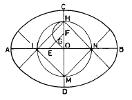
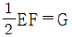
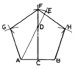
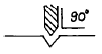
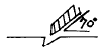
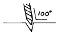
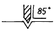
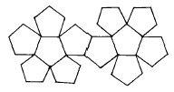
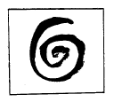

귀금속가공기능사 (2001-10-14 기출문제)
1과목: 공예디자인
1. 다음 중 감산혼합이 아닌 것은?
- 빨강 + 파랑 = 보라
- 빨강 + 녹색 = 노랑
- 빨강 + 노랑 = 주황
- 노랑 + 파랑 = 녹색
(정답률: 80%)

2. 날의 각이 60°~80°로서 연한 금속을 다듬는데 사용되는 줄은?
- 홑줄날줄
- 두줄날줄
- 세줄날줄
- 네줄날줄
(정답률: 83%)
3. 감탕을 녹일 때 안전 및 주의사항과 관계가 먼 것은?
- 감탕을 녹일때는 타지않도록 중탕하여 녹인다.
- 손으로 감탕을 만질때는 손에 물을 묻혀서 작업한다.
- 감탕을 신속히 녹이기 위해서 강한 불을 사용한다.
- 감탕을 다룰 때는 손에 화상을 입지 않도록 한다.
(정답률: 74%)
4. 커프스(와이셔츠 등의 소매 단추 역할을 하는 장신구)의 사용은 회전추가 회전을 하게 됨으로써 개폐의 기능을 갖는다. 이 때 회전추의 최적 회전각은?
- 45°
- 60°
- 75°
- 90°
(정답률: 45%)
5. 금의 성질 중 전성을 옳게 설명한 것은?
- 내식성
- 메짐성
- 뽑힘성
- 펴짐성
(정답률: 85%)
6. 장축과 단축이 주어진 타원 그리기에서 작도의 조건이 아닌 것은?


- FH = OF
- AE = CO
- OE = OF
(정답률: 63%)
7. 1변이 주어진 정5각형 작도 그림에서 DE의 길이는?

- AD/2
- AD/3
- AB/2
- CF/4
(정답률: 58%)
8. 다음 중 심리적으로 또는 시각적으로 가장 안정감을 주는 색채는?
- 녹색
- 파랑
- 흰색
- 빨강
(정답률: 85%)
9. 귀금속 용접에서 매몰재를 사용하는 가장 큰 이유는?
- 자유자재로 용접이 되기 때문에
- 다른 용접 부분이 녹을 염려가 있기 때문에
- 견고하게 용접이 되기 때문에
- 열을 쉽게 올릴 수 있기 때문에
(정답률: 41%)
10. 다음 중 가장 따뜻한 느낌을 주는 배색은?
- 파랑과 노랑
- 빨강과 파랑
- 노랑과 빨강
- 황록과 파랑
(정답률: 88%)
11. 다음 중 아르누보 양식의 특징은?
- 유동적인 곡선
- 연한 색채
- 단순한 직선
- 온화한 색채
(정답률: 85%)
12. 줄눈의 종류에는 굵기에 따라 4가지가 있다. 4가지 줄눈의 거칠기가 올바른 것은?
- 황목-거친눈줄, 중목-보통눈줄, 세목-고운눈줄, 유목-가는눈줄
- 황목-보통눈줄, 중목-거친눈줄, 세목-고운눈줄, 유목-가는눈줄
- 황목-거친눈줄, 중목-보통눈줄, 세목-가는눈줄, 유목-고운눈줄
- 황목-고운눈줄, 중목-보통눈줄, 세목-가는눈줄, 유목-거친눈줄
(정답률: 72%)
13. 왕수를 만들기 위한 염산과 질산의 혼합비는?
- 3 : 4
- 1 : 1
- 2 : 1
- 3 : 1
(정답률: 89%)
14. 색의 진출, 후퇴감에 대한 설명 중 잘못된 것은?
- 난색계는 한색계 보다 진출성이 있다.
- 명도가 높은 색은 팽창성이 있고 낮은 색은 수축성이 있다.
- 채도가 높은 것에 비하여 낮은 것이 진출성이 있다.
- 배경색과 명도차가 큰 밝은 색은 진출성이 있다.
(정답률: 67%)
15. 광산 같은 곳에서는 금을 이온하는데 주로 염소정제법을 사용한다. 이때 왜 순수 은으로 배태시키면 좋은가?
- 파편이 잘일기 때문에 분석이 용이하다.
- 파편 색소가 백색으로 나오면 분리하는데 용이하다.
- 비중을 가볍게 만들 수 있기 때문이다.
- 질산에 잘용해 되기 때문이다.
(정답률: 62%)
16. 단위 도안에 관한 설명 중 가장 올바른 것은?
- 도안화 하기 이전의 작업을 말한다.
- 도안을 구성하는 전체 요소를 말한다.
- 연속도안의 기본이 되는 도안이다.
- 자유무늬의 일부분이다.
(정답률: 56%)
17. 다음 그림 중 펀치 작업이 옳게 된 것은?




(정답률: 88%)
18. 산세(酸洗)에 사용하는 용액의 적합한 비율은?
- 물 10 : 황산 1
- 물 5 : 황산 5
- 물 7 : 황산 3
- 물 1 : 황산 10
(정답률: 67%)
19. 금속의 일반적인 특징에 관한 설명 중 잘못된 것은?
- 열을 잘 전도한다.
- 일반적으로 내화성이 좋다.
- 일반적으로 전성및 연성이 좋다.
- 일반적으로 색채가 다양하다.
(정답률: 74%)
20. 금속가공용 약품을 취급할 때에 관한 설명 중 잘못된 것은?
- 황산을 희석할 때는 물에다 황산을 서서히 붓는다.
- 산을 취급할 때는 전문 교육을 받은자가 취급한다.
- 산은 유리그릇, 플라스틱그릇, 금속재 그릇 등에 보관한다.
- 취급상 주의점을 적어두고 어린이 손에 닿지 않는 곳에 보관한다.
(정답률: 87%)
2과목: 귀금속재료
21. 산소토치를 사용하여 귀금속가공 작업을 할 때 가장 적합한 불꽃은?
- 탄화불꽃
- 중성불꽃
- 산화불꽃
- 연소불꽃
(정답률: 91%)
22. 다음 공예제도에 관한 설명 중 틀린 것은?
- 도면은 될 수 있는대로 간단명료 하게 그리는 것이 좋다.
- 외형선은 굵은 실선으로 표시 하여야 한다.
- 치수는 모두 ㎝의 단위를 사용하는 것이 원칙이다.
- 치수는 반드시 실제의 치수를 기입하여야 한다.
(정답률: 83%)
23. 다음 칠보용 소지재료 중 가장 착색과 발색이 좋은 것은?
- 단동
- 7.3황동
- 청동
- 백동
(정답률: 58%)
24. 드릴(drill)날이 부러지는 원인이 아닌 것은?
- 드릴날의 끝이 바르게 연마되지 않은 경우
- 드릴날의 길이가 구멍에 비해 긴 경우
- 일감이 잘 고정되지 않고 흔들릴 경우
- 일감에 펀치질을 하였을 경우
(정답률: 65%)
25. 돋을정의 재료 금속은?
- 특수강
- 텅스텐
- 특수 합금강
- 탄소 공구강
(정답률: 63%)
26. 색의 3속성 중 무채색에 없는 것은?
- 채도,색상
- 채도,명도
- 명도,색상
- 명도,채도,색상
(정답률: 73%)
27. 일감을 불에 달군 다음 서냉시키는 작업은?
- 뜨임
- 불림
- 풀림
- 담금질
(정답률: 59%)
28. 다음 귀금속 가공법 중 화학적인 기법은?
- 주조
- 투조
- 단조
- 부식
(정답률: 87%)
29. 스타 사파이어의 연마형은?
- 브릴리안트
- 스텝
- 로오즈
- 캐보션
(정답률: 60%)
30. 정밀주조 작업시 매몰재를 혼합할 때 적정한 물의 온도는?
- 100℃이상 끓인 물
- 50℃정도의 온수
- 10℃미만의 차가운 물
- 실내온도와 비슷한 22℃정도
(정답률: 73%)
31. 다음 그림과 같은 전개도는?

- 정 6각형
- 정 12면체
- 정 10면체
- 정 6면체
(정답률: 75%)
32. 무운·스펜서 조화론에서 20색상환 중 어떤 하나의 색을 기준으로 할 때 조화 되는 색상차는?
- 색상차 1
- 색상차 2
- 색상차 3
- 색상차 4
(정답률: 43%)
33. 보밍(Bombing)작업에 대한 설명 중 잘못된 것은?
- 보밍은 화학약품을 사용하여 금속의 표면 껍질을 한꺼풀 벗기는 방식이다.
- 사용되는 약품은 청산나트륨과 과산화수소이다.
- 금과 은을 동시에 같은 용기에 담아 보밍해서는 안된다.
- 경도의 고, 저에 관계없이 보석에는 무반응이므로 어떤 보석을 세팅한 채로 처리해도 무방하다.
(정답률: 84%)
34. 평행 투시도는 소점이 몇개 인가?
- 1소점
- 2소점
- 3소점
- 4소점
(정답률: 71%)
35. 대체로 명쾌한 성격을 가지고 있는 것이 특징인 형태는?
- 유기적 형태
- 우연적 형태
- 불규칙 형태
- 기하학적 형태
(정답률: 62%)
36. 핸드피스를 사용하여 작업할 때 안전과 거리가 먼 것은?
- 모우터 베어링은 사용 200시간마다 윤활유를 제공한다.
- 시동, 정지는 필히 가공물에 접촉한 상태에서 한다.
- 선회측(shaft)은 사용 50시간마다 윤활유를 공급한다.
- 공구는 흔들림이 없도록 사용한다.
(정답률: 81%)
37. 은을 열풀림 할 때 가열하는 최적 온도는?
- 400 – 500℃
- 500 - 600℃
- 600 – 700℃
- 700 - 800℃
(정답률: 25%)
38. 열전도가 보통금속에서 가장 높고, 전기 전도는 은 다음으로 우수하며 금, 은의 합금에 사용되는 비철금속은?
- 철(Fe)
- 구리(Cu)
- 아연(Zn)
- 납(Pb)
(정답률: 78%)
39. 빨강과 노랑의 수채화 물감을 혼합한 결과는?
- 명도, 채도가 높아진다.
- 명도, 채도가 낮아진다.
- 채도는 낮아지나 명도는 높아진다.
- 명도는 낮아지나 채도는 변함없다.
(정답률: 41%)
40. 다이아몬드의 가공형으로 주로 많이 연마되는 것은?
- 브릴리언트(billiant)형
- 스텝(step)형
- 캐보션(cabochon)형
- 로-즈(rose)형
(정답률: 75%)
3과목: 귀금속가공
41. 다음 배색 중 채도차가 가장 큰 것은?
- 빨강,회색
- 녹색,노랑
- 파랑,자주
- 주황,연두
(정답률: 84%)
42. 다음 중 산처리시 보호구가 아닌 것은?
- 고무장갑
- 고무앞치마
- 고무장화
- 고무호스
(정답률: 87%)
43. 팔라듐(palladium)의 비중은?
- 12.03
- 8.96
- 7.298
- 7.133
(정답률: 75%)
44. 금속의 표면을 정으로 파내고 그곳에 색채가 다른 금속을 채워 넣는 기법은?
- 상감기법
- 주금기법
- 단조기법
- 조각기법
(정답률: 60%)
45. 금 합금의 목적에 해당되지 않는 것은?
- 연성이 좋아진다.
- 경도를 증가시킨다.
- 색상이 아름다워진다.
- 광택이 좋아진다.
(정답률: 53%)
46. 다음 중 공예디자인의 직접 조건에 속하는 것은?
- 시대성
- 민족성
- 유행성
- 기능성
(정답률: 60%)
47. 적금(赤金, red gold)의 합금에 관한 설명 중 올바른 것은?
- 금-은의 2원 합금일 때
- 금-니켈-구리-안연의 합금일 때
- 금-은-구리-니켈-아연의 합금일 때
- 금-은-구리의 3원 합금에서 구리가 은보다 많을 때
(정답률: 70%)
48. 가스 토치(불대)의 소화 방법으로 가장 올바른 것은?
- 한꺼번에 밸브를 잠근다.
- 산소 밸브를 잠근 후 가스 밸브를 잠근다.
- 가스 밸브를 잠근 후 산소 밸브를 잠근다.
- 어느 방법이든 크게 상관없다.
(정답률: 88%)
49. 한국식 아기반지 1호의 내경은?
- 11mm
- 12mm
- 13mm
- 14mm
(정답률: 48%)
50. 제도에 사용되는 문자의 설명 중 올바른 것은?
- 문자는 명조체로 쓴다.
- 문자의 크기는 폭을 기준으로 한다.
- 문자는 수직 또는 15°오른쪽 경사로 쓰는 것을 원칙으로 한다.
- 숫자는 로마 숫자를 원칙으로 한다.
(정답률: 56%)
51. 해칭선은 어떤선을 사용하는가?
- 굵은 실선
- 가는 실선
- 가는 일점쇄선
- 굵은 일점쇄선
(정답률: 72%)
52. 저먼 실버(German silver)에 대한 설명 중 틀린 것은?
- 일명 니켈실버(Nickel silver)라고도 한다.
- 구리+아연+니켈의 합금이며 양백(洋白)이라고도 한다.
- 색깔과 성질이 은과 비슷하며 소량의 은(Ag)이 포함되어 있다.
- 오스트리아에서는 알파카(Alpaca)라고도 하며, 은대용 합금이다.
(정답률: 83%)
53. 다음 그림과 같은 소용돌이 선에서 얻을 수 있는 가장 큰 느낌은?

- 부드러움
- 고상함
- 점잖음
- 불명료
(정답률: 71%)
54. 낙랑문화의 특징과 대표적인 것은?
- 선가신앙, 유교사상이 표현된 채화칠협
- 굽이 높은 고배형의 토기
- 섬세한 입사무늬의 동경
- 누금세공법에 의한 순금공예
(정답률: 40%)
55. 도안에서 율동감을 얻기 위한 방법 중 가장 타당한 것은?
- 색이나 선을 반복하여야 한다.
- 균제적인 균형을 주어야 한다.
- 일부분을 특히 강조한다.
- 공간 설정을 조화있게 하여야 한다.
(정답률: 75%)
56. 다음 백금족(族) 중 용융점이 가장 높은 것은?
- 로듐
- 팔라듐
- 오스뮴
- 플라티늄
(정답률: 65%)
57. 일반적으로 귀금속 장신구의 땜용제로 사용되는 약품은?
- 염산
- 황산
- 붕사
- 왕수
(정답률: 90%)
58. 다음 금속 중 면심 입방격자가 아닌 것은?
- Au
- Ag
- Al
- Zn
(정답률: 80%)
59. 보석의 경도를 모스(Mohs) 척도로 활석에서 다이아몬드까지 구분한 단위는?
- 1 – 20
- 1 - 15
- 1 – 10
- 1 - 9
(정답률: 87%)
60. 광택 연마제인 적봉(루-즈)의 주성분은?
- Fe2O3
- Cr2O3
- Na2B4O7
- Na2SO3
(정답률: 78%)
이유: 감산혼합은 빛의 삼원색인 빨강, 녹색, 파랑을 혼합하여 다른 색을 만드는 것을 말합니다. 빨강과 녹색을 혼합하면 노란색이 나오는 이유는 빨강과 녹색이 각각 가지고 있는 파장이 다르기 때문입니다. 빨강은 긴 파장을 가지고 있고, 녹색은 짧은 파장을 가지고 있습니다. 따라서 빨강과 녹색을 혼합하면 빨간 파장과 녹색 파장이 같이 나오게 되어 노란색이 됩니다.